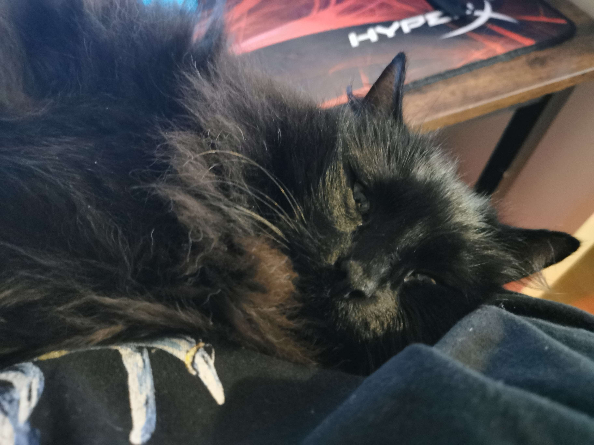

This is Ruby's Github Pages
I was forced to make this page as a part of the programming course
I am not a big fan of HTML, nor CSS - webdesign might as well be the worst thing that has ever happened to me, but alas
Things I enjoy:
- Good Turkish coffee
- Eastern cooking
- Target shooting
- Using obscure or less popular programming languages for ultimately useless projects but ones I enjoy greatly
- Tinkering with old tech and restoration of vintage computers and consoles
- Denying said tech the privilage of death and making it do things it was never meant to do - such as running modern Gentoo on a 2001 PowerBook G4
Here is a picture of my cat, he is a big fan of Scheme I heard

If I have to be honest, I do not think I have a favourite programming language myself. I use different ones for different things - Ruby (yes very funny, I know) for general use, C# for windows-related projects and Scheme for making little domain-specific languages. I am currently learning Rust so we shall see how that goes.
Current Projects:
- Learn Rust using The Book and Rustlings
- Set up a script that automatically syncs changes in my .zshrc and .tmux.conf between my main machine and the work laptop
- Fully restore my 1999 ThinkPad 600e, the CMOS battery is already on the way
- Placeholder